Overview
You have been placed in charge of a hospital’s emergency department (ED). Your first task is to make a daily staffing plan so that you stay within your operating budget, but try to avoid making patients wait. Then, you will take care of patients as they arrive each hour over a 24-hour day. You will generate revenue by caring for patients, but forcing patients to wait for care will incur penalties. Your objective in EMERGENCY! is to maximize operating profit (revenue minus expenses and penalties) by allocating staffing resources to best satisfy patient demand.
Joining a Session
Your instructor will provide you with a session code. Here's how to get set up once you have the session code:
- Navigate to edgame.edutool.org
- Enter your session code and then enter your name or team name. Click "Join Game"
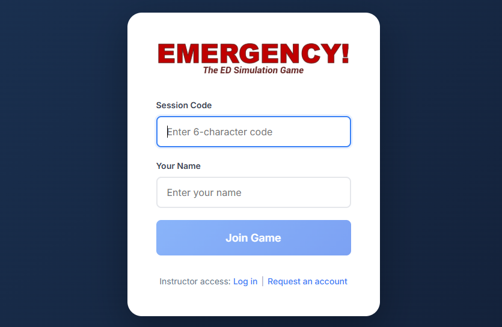
Note: The instructor and the entire class will see your name/team name, so choose wisely!
How to Play
Staffing
Your emergency department has 16 exam rooms that can be staffed, but not all must be staffed. Depending on the staffing level assigned to each room (which determines what kinds of patients can be cared for in it), the daily cost of keeping that room open is as follows:
| Room Staffing Level | Types of Patients Accommodated | Operating Cost (per day)* |
|---|---|---|
| High Acuity (A) | A, B & C | 3900 |
| Medium Acuity (B) | B & C | 3000 |
| Low Acuity (C) | C | 1600 |
| *These are the simulation's default cost values. Your instructor may have chosen different ones and will let you know if that is the case. | ||
The average daily patient demand at your ED is as follows (unless your instructor gives you different values):
- 21 A (red) patients (ESI 1 & 2; trauma/critical); each A patient occupies an A room for 4 hours
- 38 B (yellow) patients (ESI 3; stable, but urgent); occupies an A or B room for 3 hours
- 41 C (blue) patients (ESI 4 & 5; non-critical); occupies an A, B, or C room for 2 hours
Given your daily operating budget (42000, or as provided by your instructor), determine how many of each room staffing level you wish to staff. The total staffing cost across all rooms staffed must not exceed your budget.
Configuring Your ED
After signing in with your session ID and player/team name, you will see the following screen:
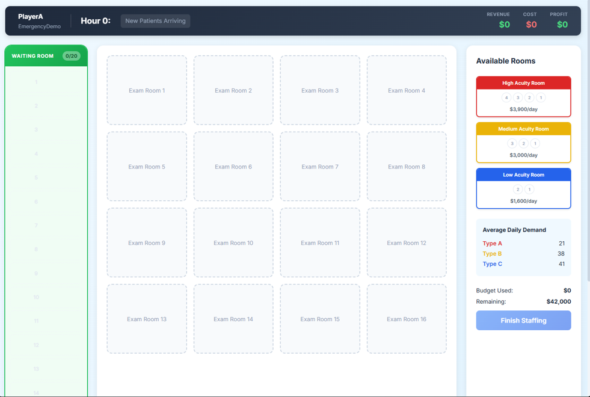
For each high-acuity room you have budgeted to staff, click on the red High Acuity Room card (upper right on the screen above) to select it, then click one of the empty Exam Room spaces in the middle of screen. This will place that card on that space. It will also increase the "Budget Used" amount and decrement the "Remaining" budget amounts correspondingly.
Continue selecting and allocating rooms you want to staff in this manner across all three room types until either you have used up your budget or you have completed your staffing plan for the day. If you wish to remove a card from an exam room space, click the card, then click the "Remove" button that appears. When finished allocating cards to room spaces, your screen should be mostly filled with staffed exam room cards, something like what is shown below.
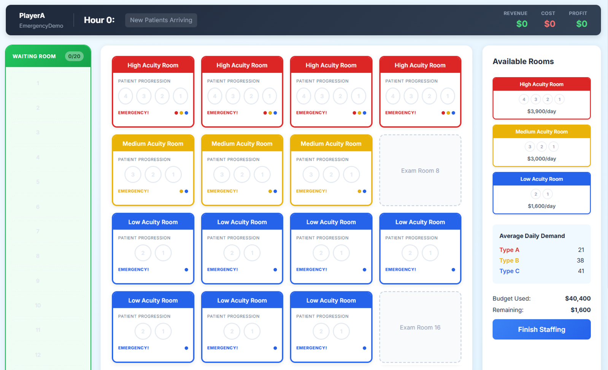
Once you are satisfied with your exam room staffing configuration, click the "Finish Staffing" button at the bottom right of the screen.
New Arrivals and Caring for Patients
Once your staffing has been set, you are ready to begin your 24-hour day of providing care to arriving patients. Each of the 24 one-hour periods that you will simulate is broken down into four phases: Patient Arrivals, Patient Allocation, Determining Wait-Related Penalties, and Caring for Patients. Each of those phases is described below.
Phase 1. Patient Arrivals
New patients arrive at the beginning of each hour. They are listed under "NEW ARRIVALS" in the Turn Summary area (upper right of the screen) and appear as tokens in the Waiting Room (left side of the screen). The number of each patient class (A, B & C) arriving varies from hour to hour.
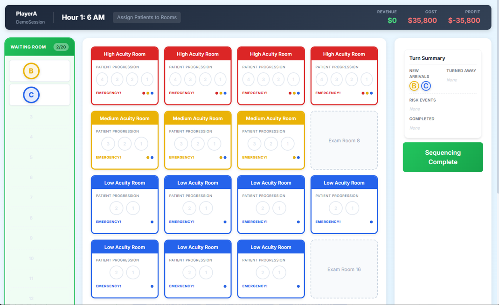
Phase 2. Patient Allocation
Now, patients in the waiting room need to be placed in available exam rooms. Only one patient may occupy an exam room. To allocate a patient to a room, first click the patient in the waiting room. This will select the patient. It will also highlight each space in available exam rooms where a patient may be placed.
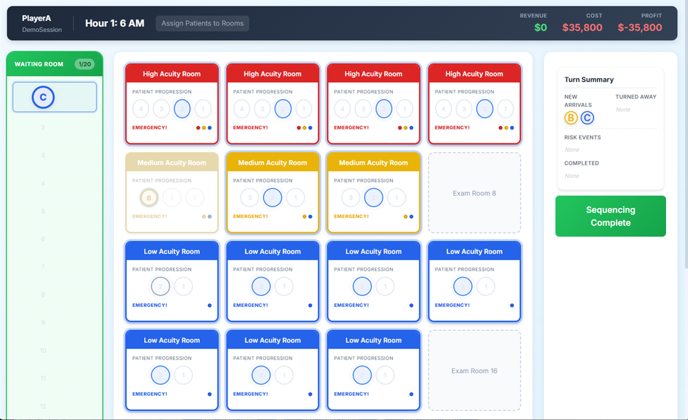
To actually place a patient in an exam room, once you have selected a patient, click on the corresponding highlighted circle in the exam room you want to add the patient to. The patient will disappear from the waiting room and appear in the selected exam room.
If you have used all your possible exam rooms and/or none of the waiting patients can be accommodated, you will see a yellow alert on the right to that effect.
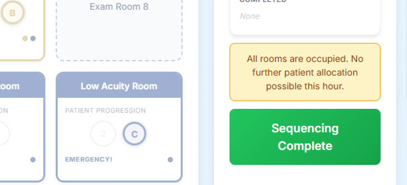
Once you are satisfied with your allocation of waiting patients to available exam rooms, click the "Sequencing Complete" button on the right side of the screen. If you still have waiting patients and there are rooms that could accommodate them, you will get a pop-up asking you to either Confirm that you do not want to room the patient, or Cancel to go back and make further allocation decisions (as shown below).
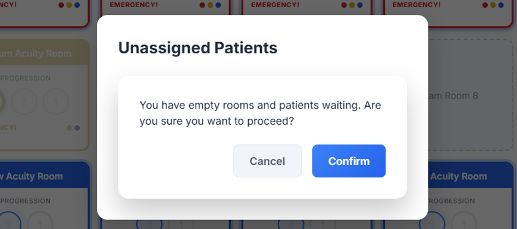
Phase 3. Determining Wait-Related Penalties
Once you have allocated all your patients to rooms that you can, if there are still patients left in the waiting room, a die will be rolled next to each waiting patient. If the die determines an A patient has suffered a cardiac arrest (i.e., "coded") while waiting, the patient will be removed from the waiting room and taken elsewhere in the hospital for immediate care. You will incur a large penalty and lose out on the potential revenue that patient represented.
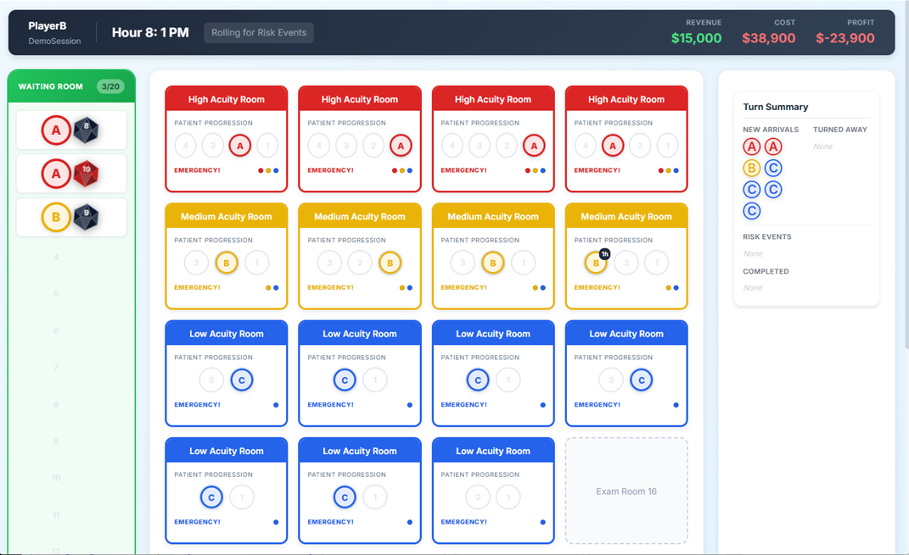
If the die determines a B or C patient is fed up with waiting, the patient will leave the waiting room and depart the ED without being cared for. You will incur a smaller penalty and lose out on the potential revenue that patient represented.
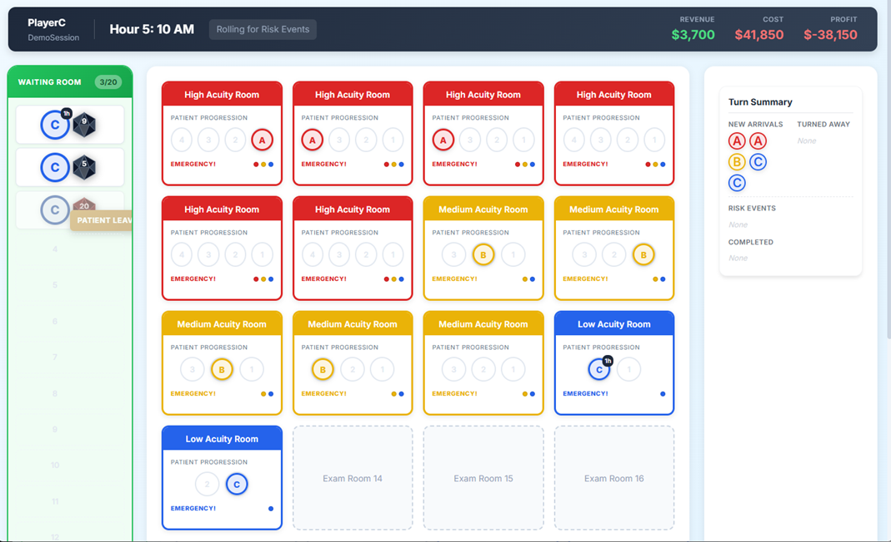
You can see a summary of harmed patients, and the penalties associated with them, in the Turn Summary box (right side of the screen) under "RISK EVENTS".
Phase 4. Caring for Patients
After any waiting-related harms have been determined, patients are cared for and advance along the progression circles within each exam room (4 -> 3 -> 2 -> 1). Any patient who was on a (1) space in a room now completes their care and exits the ED. Those patients are listed in the Turn Summary box under "COMPLETED". You will earn revenue for each completed patient.
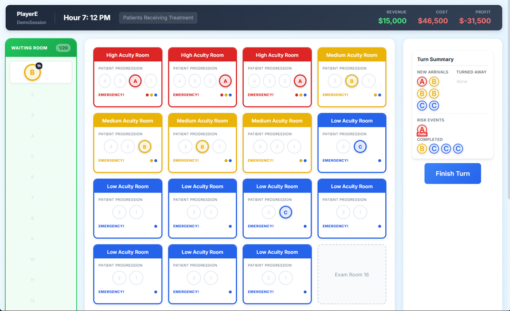
The Waiting Room lists waiting patients, from top to bottom, in order of decreasing waiting time. Patients waiting longest will be at the top, and the total time each patient has waited will be shown in a small black circle on that patient's token.
Ending the Round
Once you have completed all four phases, if you are participating in a synchronous play session, you may have to wait for one or more other players/teams to catch up (see image below) before proceeding to the next hourly round and repeating these four phases. If you are playing in an asynchronous session, you will be immediately taken to the next hour's patient arrivals.
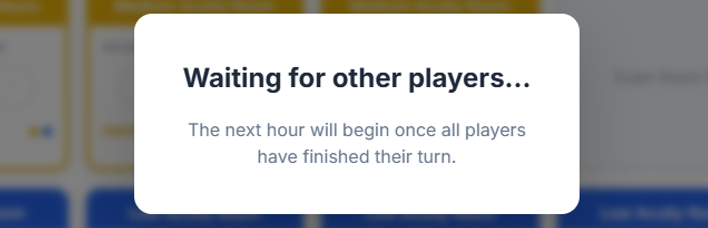
Once you have completed all 24 hourly rounds, the simulation will reveal your final performance statistics, which are discussed in the next section.
Performance Metrics
At the end of the simulation, you will see a statistics dashboard that looks something like this:
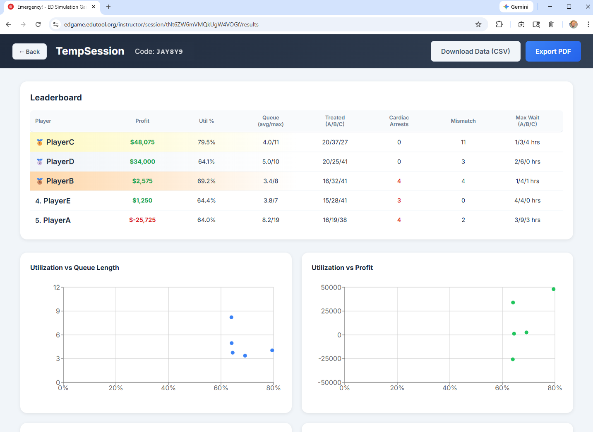
Here are definitions of key performance metrics:
| Metric/Measure | Description | Better is... |
|---|---|---|
Profit |
Your revenue minus your staffing costs and any penalties | Higher |
Util % |
The percentage of your available capacity (room-hours) that you used to care for patients. | ? |
Queue (avg/max) |
Your average and maximum waiting room census numbers. | Lower |
Treated (A/B/C) |
The number of patients, by acuity level, you treated and discharged during the simulated 24 hours. | Higher |
Cardiac Arrests |
The total number of times A patients were harmed during waiting. | Lower |
Mismatch |
The number of patients who were admitted to exam rooms above their triage level (e.g., a B patient being treated in an A room). | Lower |
Max Wait (A/B/C) |
The maximum waiting time (in hours) experienced by a member of each patient class. | Lower |
If you want to either save the team performance data as a CSV (comma-separated value) file or download the graphs as a PDF, click the corresponding button at the top of the session statistics screen.
FAQ
Shouldn't I just have all "A" rooms to make sure I have maximum flexibility?
Flexibility is good, but, like in this simulation, it is also often rather costly. When creating your staffing plan, consider how much of your demand actually requires that degree of care versus how much could make use of a less-expensive alternative.
If two teams have the same configuration of staffed exam rooms, will we get the same profit?
While it's possible, it's unlikely, as the waiting-related harms aspect relies on randomness, and that is likely to produce varying outcomes across players/teams.
Could I maximize my profit if I don't staff any rooms, and so then don't spend any money?
No. You would have no capacity to care for patients, and they would stack up in the waiting room, incurring waiting penalties and waiting-induced harms. You will most assuredly not be profitable by using a zero-staffing approach.
Should I try to maximize my ED's utilization?
No. Systems that are highly utilized tend to be rather unresponsive to unscheduled demand requests. An ED is meant to be more responsive than efficient (unlike, say, a facility that makes goods to stock).
A real ED seems more complicated than this. Why is this not exactly like a real emergency department?
This game simulates a greatly simplified emergency department. It is not intended to incorporate most, or even many, of the complexities that occur in real EDs. Its goal is to help illustrate a few specific concepts to students, and simplifying or removing much of the real-world detail and variability helps accomplish that.
Having trouble? Your instructor will be best equipped to help.